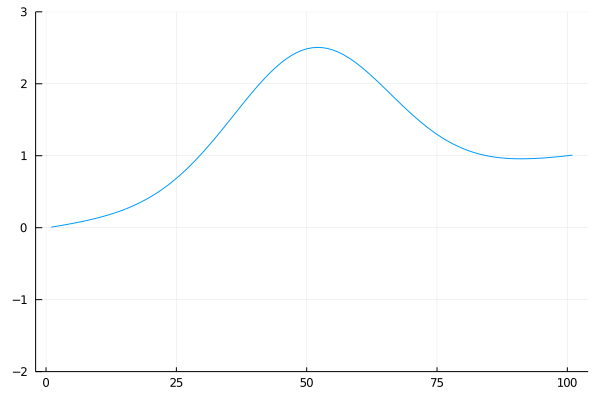
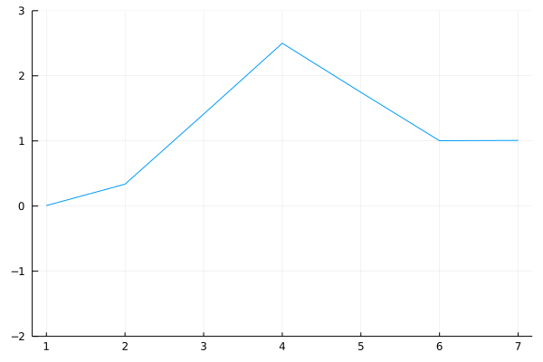

Wave equation
Wave equation is one of the most important differential equation. It models propagation of waves and has numerous applications in acoustics, electromagnetics or fluid dynamics.
Statement
We consider the simplest case of one-dimensional wave equation such as a string. The wave equation on $t\in[0,T]$ has the form
\[\frac{\partial^2 y(t,x)}{\partial t^2} = c^2 \frac{\partial^2 y(t,x)}{\partial x^2}.\]
The function $y:[0,T]\times [0,L]\to\mathbb R$ describes the displacement of the string. To obtain a complete formulation, we need to add boundary (in space) and initial (in time) conditions. Assuming that the string is fixed on its edges, the boundary conditions
\[y(\cdot,0) = y_0, \quad y(\cdot,L) = y_L\]
are time-independent. The initial conditions are prescribed by functions
\[\begin{aligned} y(0,\cdot) &= f(\cdot), \\ \frac{\partial y(0,\cdot)}{\partial t} &= g(\cdot), \end{aligned}\]
which vary in space. For consistency, we need $f(0)=y_0$ and $f(L)=y_L$.
Solving the wave equation
The following few exercises show how to solve the wave equation via the finite differences technique.
Design a numerical method to solve the one-dimensional wave equation on $[0,T]\times [0,L]$ by applying finite differences in time and space. Derive the formulas.
Solution:
To discretize, we need to choose stepsizes $\Delta t$ and $\Delta x$. For simplicity, we assume that the discretization is uniform (the length of the interval $T$ can be divided by the time step $\Delta t$ and similarly for $L$ and $\Delta x$).
The initial conditions prescribe the value
\[y(0,x) = f(x)\]
for all $x\in\{0,\Delta x,2\Delta x,\dots,L\}$. For the values at $\Delta t$, we approximate the initial condition for the derivative by the finite difference and get
\[y(\Delta t, x) = y(0, x) + \Delta t g(x).\]
Since the finite difference approximation of the first derivative is
\[\frac{\partial y(t,x)}{\partial t} \approx \frac{y(t + \Delta t,x) - y(t,x)}{\Delta t},\]
the finite difference approximation of the second derivative can be obtained in the same way by
\[\begin{aligned} \frac{\partial^2 y(t,x)}{\partial t^2} &= \frac{1}{\Delta t}\left(\frac{y(t + \Delta t,x) - y(t,x)}{\Delta t} - \frac{y(t,x) - y(t-\Delta t,x)}{\Delta t}\right) \\ &= \frac{y(t+\Delta t,x) - 2y(t,x) + y(t-\Delta t,x)}{\Delta t^2}. \end{aligned}\]
Doing the same discretization for $x$ and plugging the result into the wave equation yields
\[\frac{y(t+\Delta t,x) - 2y(t,x) + y(t-\Delta t,x)}{\Delta t^2} = c^2 \frac{y(t,x+\Delta x) - 2y(t,x) + y(t,x-\Delta x)}{\Delta x^2}.\]
The computation now is the same as for a normal ODE. We know the initial state $y(\cdot,0)$, then we compute $y(\cdot,\Delta t)$, then $y(\cdot, 2\Delta t)$ and so on. These states can be computed by rearranging the previous formula to
\[y(t + \Delta t,x) = \frac{c^2\Delta t^2}{\Delta x^2} \Big(y(t,x + \Delta x) - 2y(t,x) + y(t,x - \Delta x)\Big) + 2y(t,x) - y(t - \Delta t,x).\]
This formula can be applied for $t=2\Delta t, 3\Delta t, \dots,T$.
Before writing any code, it may be a good idea to decide on its structure. The following exercise aims to do so.
Write function declaration (function name, inputs and outputs) which will be needed to solve the wave equation and to plot the solution. Do not write any code.
Solution:
Before we can solve the wave equation, we need to perform discretization of time and space. We write the discretize function, whose inputs are the limits xlims. We use optional keyword arguments, which may specify the stepsize or the number of discretized points. The output will be the discretization xs. Even though we denote all inputs and outputs with $x$, this function will be used for time as well.
function discretize(xlims; kwargs...)
...
return xs
endThe simplest way to work with objects with lots of parameters, is to create a structure to save these parameters. We therefore create struct Wave with fields f, g and c. We do not use the boundary values $y_0$ and $y_L$ as they can be computed from $f$.
struct Wave
f
g
c
endThe wave equation is solved in solve_wave(ts, xs, wave::Wave). Its inputs are the time discretization ts, the space discretization xs and the wave parameters stored in wave. It returns a matrix y with dimensions equals the number of time and space points.
function solve_wave(ts, xs, wave::Wave)
...
return y
endFinally, to plot, we define plot_wave function, where the inputs are the computed wave equation y and a name file name file_name to save the animation to. The optional arguments can be the number of frames per second fps and any additional arguments used for plotting.
function plot_wave(y, file_name; fps=60, kwargs...)
...
return nothing
endThe most difficult part is done. We have done the thinking and finished the code structure. Now we just need to do manual labour and fill the empty functions with code.
Write the functions from the previous exercise. Do not forget to include any pacakges needed.
Solution:
The discretization will use the range function. We pass to it the keyword arguments, which will usually be either the length of the sequence length or the discretization step step. To obtain an array, we use the collect function. If the step is specified, the last point of xs may be different from xlims[2]. In such a case, we add it and throw a warning.
using Plots
using LinearAlgebra
function discretize(xlims; kwargs...)
xs = range(xlims[1], xlims[2]; kwargs...) |> collect
if xs[end] != xlims[2]
@warn "Discretization not equidistant."
push!(xs, xlims[2])
end
return xs
endTo solve the wave equation, we first perform a check that both discretizations are uniform. The better way would be to write a function which admits a non-equidistant discretization but we did not derive the formulas for it. If ts is equidistant, then diff(ts) should be a vector of constants and therefore diff(diff(ts)) should be a vector of zeros.
Then we initialize y with zeros and set the initial condition y[1,:] via wave.f and the boundary conditions y[:,1] and y[:,end] which are fixed and, therefore, the same as y[1,1] and y[1,end], respectively. We recall that the formulas for computing the solution are
\[\begin{aligned} y(\Delta t, x) &= y(0, x) + \Delta t g(x), \\ y(t + \Delta t,x) &= \frac{c^2\Delta t^2}{\Delta x^2} \Big(y(t,x + \Delta x) - 2y(t,x) + y(t,x - \Delta x)\Big) + 2y(t,x) - y(t - \Delta t,x). \end{aligned}\]
Since the boundary conditions are prescribed, we set the first condition to y[2,2:end-1] and the other to y[i+1,2:end-1].
function solve_wave(ts, xs, wave::Wave)
norm(diff(diff(ts))) <= 1e-10 || error("Time discretization must be equidistant.")
norm(diff(diff(xs))) <= 1e-10 || error("Space discretization must be equidistant.")
n_t = length(ts)
n_x = length(xs)
y = zeros(n_t, n_x)
y[1,:] = wave.f.(xs)
y[:,1] .= y[1,1]
y[:,end] .= y[1,end]
y[2,2:end-1] = y[1,2:end-1] + (ts[2]-ts[1])*wave.g.(xs[2:end-1])
s = wave.c^2 * (ts[2]-ts[1])^2 / (xs[2]-xs[1])^2
for i in 2:n_t-1
y[i+1,2:end-1] .= s*(y[i,3:end]+y[i,1:end-2]) + 2*(1-s)*y[i,2:end-1] - y[i-1,2:end-1]
end
return y
endThe best visualization of the wave equation is via an animation. Each frame will be a plot of a row of y. We use the keyword arguments kwargs. We run the for loop over all rows, create the animation via the @animate macro and save it into anim. To save the animation to the hard drive, we use the gif function, for which we specify fps.
function plot_wave(y, file_name; fps=60, kwargs...)
anim = @animate for y_row in eachrow(y)
plot(y_row; kwargs...)
end
gif(anim, file_name, fps=fps)
return nothing
endNow we can finally plot the solution.
Solve the wave equation for $L=\frac32\pi$, $T=240$, $c=0.02$ and the initial conditions
\[\begin{aligned} f(x) &= 2e^{-(x-\frac L2)^2} + \frac{y_L}{L}x, \\ g(x) &= 0. \end{aligned}\]
Do the time discretization with stepsize $\Delta t=1$ and the space discretization with $N_x=101$ and $N_x=7$ steps (plot two graphs, each for one $N_x$).
Solution:
First, we assign the parameters
f(x,L,y_L) = 2*exp(-(x-L/2)^2) + y_L*x/L
g(x) = 0
L = 1.5*pi
T = 240
c = 0.02
y_L = 1Since we want to do the same task for two different $N_x$, we write a function run_wave, which performs the discretizations, creates the Wave structure, solves the wave equation and finally plots the wave. We use different keywords for the discretize function as we have stepsize for the temporal discretization and number of steps for the spatial discretization.
function run_wave(L, T, Δ_t::Float64, N_x::Int64, file_name; kwargs...)
ts = discretize((0,T); step=Δ_t)
xs = discretize((0,L); length=N_x)
wave = Wave(x -> f(x,L,y_L), g, c)
y = solve_wave(ts, xs, wave)
plot_wave(y, file_name; kwargs...)
endNow we call this function with different values of $N_x$. All keyword arguments are passed to the plot function inside plot_wave.
run_wave(L, T, 1., 101, "wave1.gif"; ylims=(-2,3), label="")
run_wave(L, T, 1., 7, "wave2.gif"; ylims=(-2,3), label="")┌ Info: Saved animation to └ fn = "/home/runner/work/JuliaCourse/JuliaCourse/docs/build/lecture_12/wave1.gif" ┌ Info: Saved animation to └ fn = "/home/runner/work/JuliaCourse/JuliaCourse/docs/build/lecture_12/wave2.gif"


If you see these two waves in different phases (positions), please refresh the page (the animations have already run for some time and the error accumulated).
After the potential reload, the waves should start from the same location and move at the same speed. This is an important property of any physical system: it is consistent. If we use a different discretization, their behaviour should be roughly similar. Of course, the finer spatial discretization results in smoother lines but both waves have similar shapes and move at similar speeds. If we see that one moves two times faster, there is a mistake in the code.